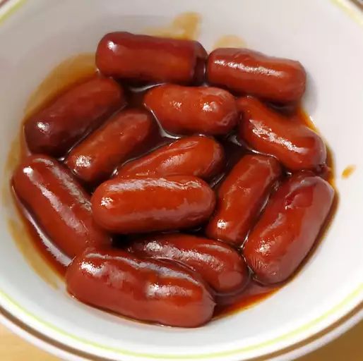

Slow Cooker Cocktail Smokies Recipe

Description
This little smokies recipe is so easy to make in the slow cooker
for a party appetizer. They're great for potlucks as well. The
amounts can easily be adapted to suit your needs.
Ingredients
- 1 (12 ounce) bottle barbeque sauce
- 1 (8 ounce) jar grape jelly
- 2 (14 ounce) packages miniature smoked sausage links
Directions
Combine barbeque sauce and grape jelly in a slow cooker. Stir
in miniature smoked sausage links. Cook on High until heated
through, about 2 to 3 hours.